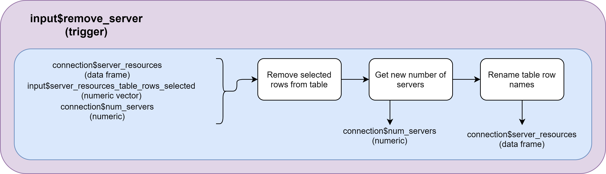
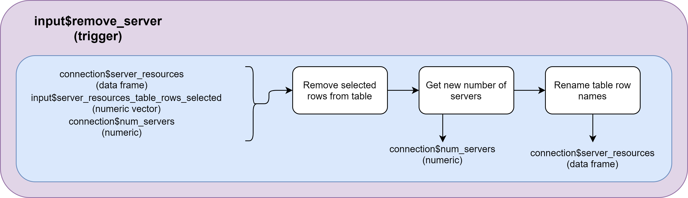

5 Developers Guide
Along this section, documentation for future developers and maintainers of ShinyDataSHIELD is provided. It contains information about how the whole Shiny application is structured, all the different scripts that contains, flowcharts of the different files and information on how to extend the capabilities of ShinyDataSHIELD to new types of resources as well as new methodologies.
| ❗ Observation |
|---|
| Please read this documentation with the actual source code on the side for easier understanding. |
5.1 File structure of ShinyDataSHIELD
Typically Shiny applications are contained in a single file or two files, since the typical structure of a Shiny application is to have a server function and a ui function that can be on the same file or split for larger applications. On dsOmicShiny the server function has been split into different scripts where all of them contains the code of a certain block of the application. It has been done this way to not have a really long server file that is difficult to navigate and debug. There is no need to split the ui file into different scripts since it only contains the graphical declarations of the applications and is really easy to update and navigate.
The different scripts that compose the whole ShinyDataSHIELD are the following:
ui.Rserver.R, composed of the folowing scripts:connection.Rdescriptive_stats.Rdownload_handlers.Rgenomics.Romics.Rplot_renders.Rstatistic_models.Rtable_renders.R
The file server.R exists to source the different files and it also includes some small funcionalities.
Now a file per file explanation will be given with flowcharts (when needed), remarkable bits of code explanations and general remarks. Also, details on how to implement new functionalities will be given when needed.
5.1.1 ui.R
Inside this file there are all the declarations of how the graphical user interface (GUI) will look like.
First, it contains a declaration of all the libraries that have to be loaded for the application to run. The libraries are the following: DSI, DSOpal, dsBaseClient, dsOmicsClient, shinydashboard, shiny, shinyalert, DT, data.table, shinyjs, shinyBS, shinycssloaders).
The next piece of code found
jscode <- '
$(document).keyup(function(event) {
if ($("#password").is(":focus") && (event.keyCode == 13)) {
$("#connect_server").click();
}
});
'Is a JavaScript declaration that reads as: When the #password item (corresponds to the text input of the password on the data entry tab) is active (the user is writting in it) and the “Intro” key is pressed, trigger the #connect_server item (corresponds to the “Connect” button on the GUI). That provides the user the typical experience of inputting the login credentials and pressing “Intro” to log in.
It’s important noting that this is only the declaration of a string with the code inside, to actually make use of it, there is the line 58 of this same file that actually implements it.
There are a some functions used in this file that are worth mentioning:
hidden(): From theshinyjslibrary. The elements wrapped inside of this function will not be rendered by default, they have to be toggled from the server side. Example: A GUI element that needs to be displayed only when a certain condition is met.withSpinner(): From theshinycssloaderslibrary. The elements wrapped inside of this function will be displayed as a “loading spinner” when they are being processed. This is used to wrap figure displays. Example: A plot that is being rendered, it’s better for the user experience to see a “loading spinner” so that it knows something is being processed rather than just staring at a blank screen waiting for something to happen.bsModal(): From theshinyBSlibrary. It’s used to prompt pop-ups to the user. Example: By the click of a button you want to render a pop-up to the application with a figure of an histogram of a selected column of a table.
The rest of this file is your average Shiny functions and declarations, read the official documentation for any doubts. Please note that ShinyDataSHIELD uses shinydashboard to improve the looks and user experience, for any doubts regarding that please read it’s documentation.
5.1.2 server.R
The server file is divided into the following blocks.
- Declaration of reactiveValues: As a code practice measure, all the variables that have to be used in different parts of the code (Example: Table that contains the information about the loaded resources, has to be written when loading the data and afterwards to check whether a resource has been loaded or not) are reactive values. The only occassions where there are “regular” variables are inside functions that use variables as placeholders to be used only inside of that function (Example: Storing the results of a middle ground operation to be later used inside the same function to perform the final analysis, whose results will be saved on a reactive value variable). Developers used to lower level languages can see this as
publicandprivatevariables. - Sourcing of scripts: Sourcing all the different scripts that actually make up
server.R. As said before this is done this way to have a more structured application where each script takes care of a certain block of the application. - Function declaration: Declaration of a function that given a column of a data table will truncate the decimal places to 4, it’s used when rendering tables to not have tables with 9 decimals that look hideous.
- Functions to manage the “Connected” / “No connection” display. It’s a bunch of logic and CSS to just control a small element of the GUI. Basically if the variable
connection$activeisTRUEthe GUI will show “Connected” next to a green dot with a “Disconnect” button, otherwise it will display “No connection” next to a red dot. When the button “Disconnect” is pressed, the function to log out of the server is triggered and theconnection$activevariable is set to false.


The scripts sourced for by the server.R are the following:
5.1.2.1 connection.R
This is probably the most important script of the whole application, as it’s the one that puts some constraints on the capabilities of the application. It also is responsible for loading the data in a proper way in order to ensure that the application capabilities can be extended in the future painlessly (modular).
Inside this script there are five different sections that are triggered by different actions:
- Connection to the server to obtain the projects and resources. Triggered by the button with label “connect_server”.
- Get tables / resources from the selected project. Triggered everytime the selector with label “project_selected” is changed.
- Add a study. Triggered by the button with label “add_server”.
- Remove a study. Triggered by the button with label “remove_server”.
- Load the selected studies to the study servers. Triggered by the button with label “connect_selected”.
Since it’s very important to understand how the code is working in this script, some flowcharts have been created to be read along the code itself and easily understand what’s going on.
| ❗ Observation |
|---|
| Click on the flowcharts to open them on a separate tab in full-resolution. |

 


There are various red boxes stating some assumptions and some red boxes that show how to implement new features. Let’s start by reviewing the assumptions:
- Assumption: Only tables or resources are selected for a study, never both combined
- Assumption: Always only one table per study
- Assumption: Consistency of columns between all the tables of the different studies (pooled data)
- Assumption: A single study can contain multiple resources, multiple studies can only contain one resource per study
All the assumptions boxes are located on the parts of the flowchart that would have to be modified in order to change them.
When loading the selected resources or tables into the study servers, the table available_tables is created. The name is a little bit confusing since it actually contains the information about tables and resources, the developer apologizes as this variable was set at the beginning of the development and has not been updated. Nevertheless, it’s an important variable of the application, the structure of this table is the following.
| ❗ Observation |
|---|
On the following table there are code examples, it is marked as THIS wherever the column value would be placed. |
| Column | Description |
|---|---|
| server | Contains the names of the study servers.connection$builder$append(server = THIS, url = input$url, user = input$user, password = input$password, driver = "OpalDriver") |
| table | Name of the table in the Opal server. Structure: project_name.table_name |
| table_internal | Name assigned to the table on the study server. Assigned by:datashield.assign.table(THIS, table) |
| type_resource | Type of the resource |
| resource | Name of the resource in the Opal server. Structure: project_name.resource_name |
| resource_internal | Name assigned to the resource on the study server. Assigned by:datashield.assign.resource(THIS, resource) |
The Opal server can host different types of resources, to name a few there are ExpressionSet, RangedSummarizedExperiment and SQLResourceClient. Each type of resource needs a special treatment to be used, for example SQLResourceClient resources are plain tables, so they need to be converted to tables on the study server to use them. Currently the following resource types are supported by ShinyDataSHIELD.
| Resource type | Treatment | Name of the resource type on available_tables |
|---|---|---|
| TidyFileResourceClient, SQLResourceClient | - as.resource.data.frame(resource)- Change name to table1 instead of resource1- Get column names ( table_columns) and types (table_columns_types) and save them |
table |
| SshResourceClient | No treatment | ssh |
| GdsGenotypeReader | - as.resource.object(resource) |
r_obj_vcf |
| ExpressionSet | - as.resource.object(resource)- Copy as table1 to use the descriptive statistics tab with this resource |
r_obj_eset |
| RangedSummarizedExperiment | - as.resource.object(resource)- Copy as table1 to use the descriptive statistics tab with this resource |
r_obj_rse |
| Any other resource type | - as.resource.object(resource) |
r_obj |
Examples of available_tables depending on the selected resources and study servers.
- A pooled study of three tables, each one on a different study server:
| server | table | table_internal | type_resource |
|---|---|---|---|
| server1 | CNSIM.CNSIM1 | table1 | table |
| server2 | CNSIM.CNSIM2 | table1 | table |
| server3 | CNSIM.CNSIM3 | table1 | table |
What can be seen from this table is that there are three study servers and each one contains a different table. Since they are located on different servers they have the same internal names.
- A pooled study using resources that contain ExpressionSets
| server | resource | resource_internal | type_resource |
|---|---|---|---|
| server1 | RSRC.GSE66351_1 | resource1 | r_obj_eset |
| server2 | RSRC.GSE66351_2 | resource1 | r_obj_eset |
We can observe the same things as the previous case but here we have a different type_resource
- Single study server with two resources (one of which is actually a table)
| server | resource | resource_internal | type_resource | table | table_internal |
|---|---|---|---|---|---|
| server1 | RS.G_covars | resource1 | table | RS.G_covars | table1 |
| server1 | RS.G_vcf | resource2 | r_obj_vcf | NA | NA |
On this case we can see that there are two resources on the same server, and the resource of type table is actually copied into a new variable (internal) with the name table1.
Now, let’s look at some examples to add new resource types on the connection.R file. There are different cases for the treatment that the new resource requires.
- Resources that contain tables. They have to be treated as so in order to be able to use them on the “Descriprive statistics”, if a new type of resource that contains tables is being implemented, change line 88
if (any(c("TidyFileResourceClient", "SQLResourceClient") %in% resource_type)){, in this line we would add the name of the new resource type that is going to be treated as a table. Example: A new resource calledNewTablesis being introduced, the line 88 has to be changed toif (any(c("TidyFileResourceClient", "SQLResourceClient", "NewTables") %in% resource_type)){. - Resources that just need to be loaded with no further action performed to them. Add another
else ifstatement after line 107. Example: New resource calledSimple_resource
else if ("Simple_resource" %in% resource_type){
# Update available_tables list with the new resource type name
lists$available_tables <- lists$available_tables[resource_internal == paste0("resource", i), type_resource := "simple_resource"]
}- Resources that need to be converted into R objects (
datashield.assign.expr(conns, symbol = "methy", expr = quote(as.resource.object(res)))) and nothing else. Will work out of the box (thetype_resourcecolumn of thelists$available_tablestable will readr_obj). - Resources that need to be converted into R objects (
datashield.assign.expr(conns, symbol = "methy", expr = quote(as.resource.object(res)))) and be further processed. Add anotherelse ifstatement after line 135. Example: A new type of resource calledspecial_resourcethat contains some variable names that are desired to be saved on a variable to feed a list on the GUI.
else if("special_resource" %in% resource_type) {
# Update available_tables list with the new resource type name
lists$available_tables <- lists$available_tables[resource_internal == paste0("resource", i), type_resource := "special_resource"]
# Perform the needed actions for this resource, on this example: using the ds.varLabels function
# and save the output on a variable
lists$table_columns <- ds.varLabels(paste0("resource", i), datasources = connection$conns)$server1
}There’s already a variable called table_columns for those types of cases. If the new resource requires novel things just update the variables on the top of the server.R and apply the required methodologies.
As a summary, connection.R loads the selected tables / resources into the study servers and updates the table available_tables with the information about the loaded resources / tables and their types. The idea is that when X resource is loaded, it’s already processed on the connection.R to be used on a certain block, so all the funcional blocks only contain the code of their core functionality, not code to pre-process the resource before analyzing it.
5.1.2.2 descriptive_stats.R
The script contains all the render functions to render the selectors of the block. This has to be done this way since the “Variable” selector for example is fed a list created when inputing the data, so it’s a dynamic value. Putting the render functions on the ui.R will result in the application crashing since the list of variables is non existant at the time of launching the Shiny application.
Besides that, there’s also an observe function that takes care of warning the user if no connection is active and this tab is selected, as well as warning the user if the resource of the study server is not appropiate for this tab.
This block basically contains figures and tables, and they are actually created on the table_renders.R and plot_renders.R.
5.1.2.3 statistics_models.R
This script contains the functions to run two tabs, the “Statistic models” and the “Mixed statistic models”. In this tab there are two sets of very similar triggers (observeEvent()):
- A toggle to show and hide the table that displays the variables of the study table and their types. (
toggleElement()) - Perform the model with the inputed data. Encapsulated on a
tryCatchso that if there’s an error when calculating the model, there’s ashinyalert()to prompt a popup warning in the GUI. - Trigger that displays a
shinyalert()popup with some help regarding the input of the formula.
Those tree elements are doubled, one for the GLM model and the other for the GLMerSLMA. Note that for the GLMerSLMA there’s an extra element to select the study to show the results of, since the GLM provides a model for the pooled data and GLMer outputs the coefficients for each of the study servers.
Besides that, there’s also an observe function that takes care of warning the user if no connection is active and this tab is selected, as well as warning the user if the resource of the study server is not appropiate for this tab.
5.1.2.4 genomics.R
On this scripts there are all the genomics methodologies implemented into ShinyDataSHIELD
- PLINK files: The functions corresponding to the PLINK analysis is just a trigger that reads the inputed command and performs the querry and a
renderText()function to render the raw text output from the PLINK. - VCF files: For this resources, there are the following items
- Render functions for the lists of variables.
- Trigger to perform the GWAS, encapsulated on a
tryCatch()so that if there’s an error when calculating the GWAS, there’s ashinyalert()to prompt a popup warning in the GUI.
It’s important noting that when using VCF files the user has to load two files into the study, the VCF and a covariates files (table). The connection.R script handles that and loads the VCF as a resource and the covariates as a table, so on the available_tables they have their own different type_resource value. Therefore, this can be done:
x=lists$available_tables[type_resource == "r_obj_vcf", resource_internal]
covars = lists$available_tables[type_resource == "table", resource_internal]This assumes that when the user wants to perform this analysis, there’s only a single study with two resources, one of type table for the covars and one of type r_obj_vcf. It’s important noting (assuming that the part of the connection.R has been understood) that a VCF resource is a type of resource that does not need further treatment than being converted to an R object (datashield.assign.expr(conns, symbol = "methy", expr = quote(as.resource.object(res)))) however it was of interest giving it a different type_resource name than the standard r_obj that is given to this types of resources, so it has it’s own else if statement on the connection.R.
Besides that, there’s also an observe function that takes care of warning the user if no connection is active and this tab is selected, as well as warning the user if the resource of the study server is not appropiate for either tab (a SSH resource will trigger a warning if the “Analysis with BioConductor” tab is selected).
5.1.2.5 omics.R
This script is virtually the same as the VCF part of the genomics.R, it contains GUI renders, a trigger to perform the analysis itself encapsulated on a tryCatch() and the observe function for good measure. It’s important noting that so far it only has implemented LIMMA, on the future it should include DESeq and edgeR methodologies.
5.1.2.6 table_renders.R
This script creates the displays of all the tables of ShinyDataSHIELD, it uses the DT package to do so. Besides the descriptive_summary table, all the other tables just render results from other functions.
There are some things to point of this script:
- As can be seen in
descriptive_summarytable, you can actually perform operations inside of arenderDTfunction and display the result of them. - The most used options for the tables aesthetics are the following
options=list(columnDefs = list(list(visible=FALSE, targets=c(0))),
paging = FALSE, searching = FALSE)This prevents the rownames column to be displayed (usually it just contains the numeration of rows 1…N, be aware sometimes it’s of interest to see this column) and eliminates the paging and searching functionalities of the table. For small tables it makes sense to not show that but on big tables those options are set to TRUE, as it’s very useful to have a search box on them.
- The tables that display numerical columns (mixed or not with non-numerical columns) are actually passed through the
format_numfunction (defined onserver.R) so the displayed table has only four decimals but the actual table (the one that can be saved) has all the decimals. This is done using the following code
This will pass each column to the function and if it’s numerical the decimals will be cut to 4.
- The table output structure of the LIMMA results look different than the others, this is because when performing a LIMMA with pooled resources it returns one table for each study, what is being done is just binding them to display to the user all the obtained results.
5.1.2.7 plot_renders.R
There are two types of plots on ShinyDataSHIELD, the ones created with the base function plot and the ones created with the ggplot library. In order to later recover the plots to download them, they actually have a different structure.
- Base plot structure:
output$random_plot <- renderPlot({
plots$random_plot <- function(){
function_that_generates_the_plot_using_base_package(arguments)
}
plots$random_plot()
})For the base plots, a function is declared that returns the plot and is called to generate the plot to the GUI.
- Ggplot structure:
output$manhattan <- renderPlot({
plots$ggplot <- function_that_generates_the_plot_using_ggplot2_package(arguments)
plots$ggplot
})In this case the plot is saved, ggplot will generate a plot variable that can be called to render the plot.
On this script there are two plots that are inside a renderCachedPlot function instead of a renderPlot because they take really long to calculate and it’s better to cache them.
Inside of the renderPlot function some other code can be put, such as toggles to GUI elements or tryCatch() functions.
5.1.2.8 download_handlers.R
In this script everything related to downloading plots and tables is found. There are basically three types of structures
- Table downloader: To download a
*csv. Structure:
output$table_download <- downloadHandler(
filename = "table.csv",
content = function(file) {
write.csv(
variable_that_contains_table
, file, row.names = FALSE)
}
)The row.names = FALSE argument may not be needed in tables where the row names are important.
- Base plot downloader: To download a
*.png. Structure:
output$base_plot_download <- downloadHandler(
filename = "base_plot.png",
content = function(file) {
png(file = file)
plots$base_plot()
dev.off()
}
)Basically this calls the previously declared function and captures the plot into a *.png.
- GGplot downloader: To download a
*.png. Structure:
output$ggplot_download <- downloadHandler(
filename = "ggplot.png",
content = function(file) {
ggsave(file, plot = last_plot())
}
)When using ggplot, the function last_plot() renders the last plot rendered by ggplot. This only has one inconvenient, that is when you are downloading a plot that takes a while to render, the application doesn’t show the save window dialog until it has rendered again. This should be addressed in the future as it really halters the user experience.
5.1.3 How to add a new block
To add a new block to ShinyDataSHIELD, the developer has to create a new *.R script inside the R folder of the project and give it a descriprive name of the function that it will perform.
So the Shiny application actually sees it, the server.R needs to be updated after line 17 and source the new file. Example: New block called new_analysis.R, the update to the server.R will be
Afterwards, the ui.R can be updated by defining how the new block will be presented to the user. The sidebarMenu function needs to be updated so that the new tab appears on the sidebar of the application, follow the structure of the other tabs. Afterwards update the dashboardBody function by defining all the different elements of the new tab, follow the structure of the other available tabs to follow the general design lines, all the functions that need to be used here are standard Shiny functions mostly and there’s plenty of documentation and examples available online, when in doubt just try to copy an already implemented structure.
Now the user can focus on the types of files that will feed this new block, if it’s a table there’s no need to worry, if it’s a resource that is not implemented the connection.R needs to be updated. Read the above documentation for guidance on the changes that need to be done for new resources types.
Once the GUI is setup and the table / resource that this block will use is setup, the backend for this block can be built on the new_analysis.R file. Include on that file all the required renderUI() functions and steps to process the file and analyze it. Probably a new variable will be required to hold the results, update the server.R header and include a new reactiveValues() declaration for the new block.
If the new block requires to display tables or figures, update the table_renders.R and plot_renders.R following the given examples on their sections of the documentation. Make sure to include the download buttons for them on the download_handlers.R.
If there is some part of the code that takes some time to process, there’s the option of wrapping it inside the withProgress() function in order to display a loading annimation to the GUI to alert the user that something is being processed.
To conclude the new block script, the developer has to make sure to include the observe() function to alert the user if there’s no connection active or if the resources loaded are not the ones that this block requires. The structure for this is the following
observe({
if(input$tabs == "new_block") {
if (!connection$active) {shinyalert("Oops!", "Not connected", type = "error")}
else if (!(any("required_resource_type" %in% unlist(lapply(unique(lists$available_tables$resource_internal), function(x) ds.class(x, connection$conns)))))){
shinyalert("Oops!", "Selected resource(s) is not the one required by this block.", type = "error")
}
else {
# Whatever needs to be done
}
}
})Note that the if(input$tabs == "new_block") refers to the tabname assigned on the sidebarMenu() function of the ui.R.
When developing a new block there will probably be many problems occuring, in order to debug a Shiny application there is the browser() function, if the developer is getting some sort of error at X line of the script, just write browser() on the line avobe of the error, the execution will be stopped at that point and the developer can interact with all the available variables of the environment through the RStudio console, usually running the line that is giving an error on the console will provide enough information to kill the bug. If the line breaking is a function call it is advisable to type the variables that are being passed into the function on the console, that way the developer can see what exactly is being passed and can see that some argument is NULL when it shouldn’t or it’s a character when it should be a number, those are quite common problems.
When a new block is developed and integrated into ShinyDataSHIELD, please conclude it by updating this documentation and the user guide with a brief explanation of the new block and some remarks of the most interesting bits of it.